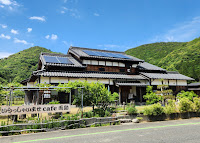
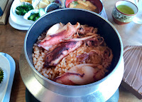
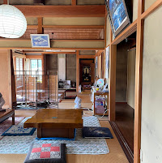

Schedule
DAY 1
旅の始まり
09:00
京都駅集合 ▼ ガイド・写真
駅ビル内で朝食や買い出し。旅のスタート。

← swipe: photo & guide →
10:00
レンタカー出発 ▼ 地図
京都駅周辺で車をピックアップ。伊根へ。
11:30
伊根到着・平田散策 ▼ 写真
舟屋が連なる平田エリアを散策。


13:00
昼食：そば 東風(コッチ） ▼ 写真
亀島の入り口にある人気店。


15:00
舟宿：まるいち ▼ 写真
伊根でも評判の舟宿。


18:00
夕食：神慈や ▼ 写真
地産地消の新鮮な海の幸を堪能。


←
LEFT SWIPE FOR DAY 2
DAY 2
釣りと帰路
05:30
起床
まだ暗い海が目の前に広がる。
06:00
釣り - zero1号 ▼ 写真


10:00
チェックアウト
釣りはチェックアウトに合わせて4時間だが8時間もある。
12:00
昼食：両助 ▼ 写真
山奥入った一軒家でいか釜飯とカレー。



13:00
観光・ゆっくり京都駅へ
天橋立は景色が良いが車からは見れない。
16:00
帰路・解散
また来る理由はできている？